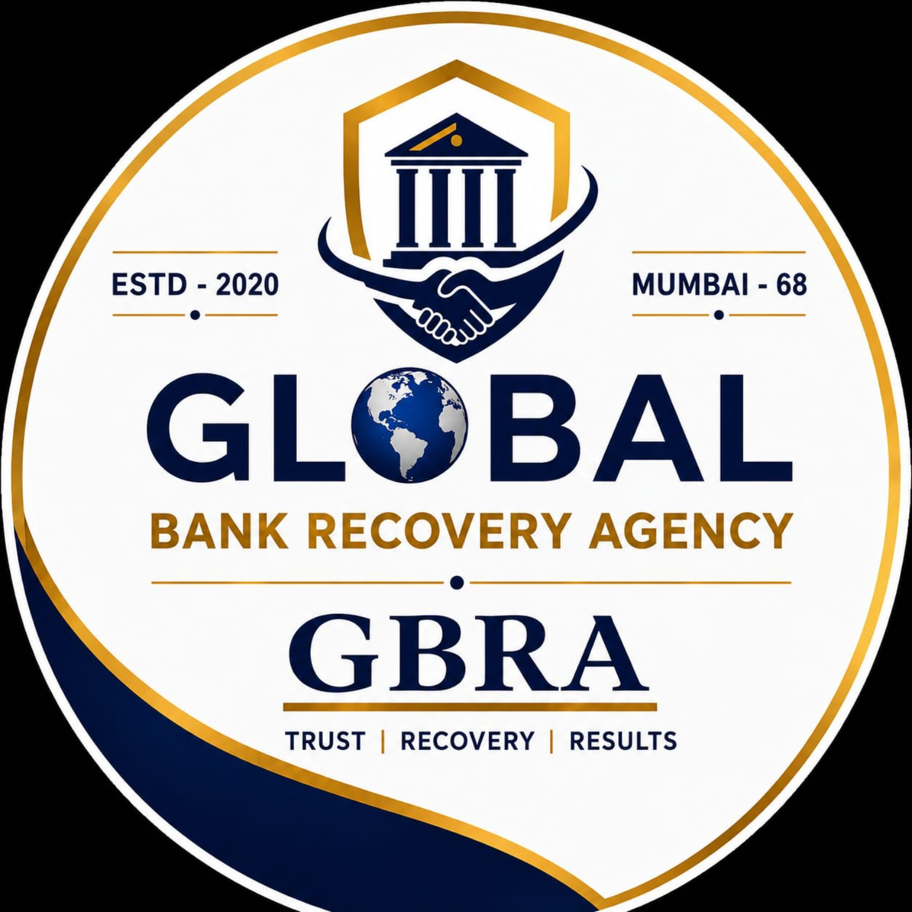

Professional Recovery Services
Field Investigation
Detailed field verification, investigation and reporting with a professional approach.
View Services →
Professional, trusted and result-oriented recovery solutions for banks, financial institutions and businesses.
Reliable field, vehicle and financial recovery support with a professional approach.
Detailed address verification, field investigation, tracing and reporting services.
Professional vehicle recovery support with responsible handling and reporting.
Recovery support for banks, financial institutions and business portfolios.
Professional documentation, case updates and recovery reports.
Structured support designed for institutional and corporate recovery requirements.
Global Bank Recovery Agency provides professional recovery and field support services with an emphasis on responsible operations, accurate reporting and client coordination.
Every assignment is handled with professionalism, responsibility and a clear focus on the client's requirements.
Professional parking and yard support for recovered vehicles with proper coordination, records and reporting.
A dedicated solution for safe and organised parking of recovered vehicles, subject to site availability and applicable requirements.
Contact Global Bank Recovery Agency for service information and coordination.
3, Anthony Chawl, Ketkipada,
Dahisar East, Mumbai - 400068